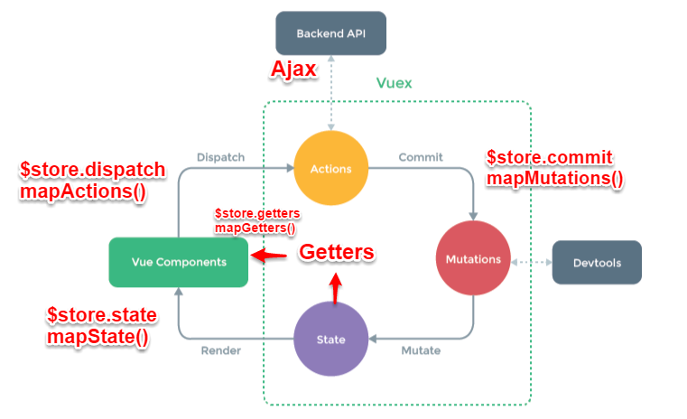

# vuex 学习及原理
# 前言
本人平时学习及收集内容，欢迎参入一起讨论。
# 内容
# 一、Vuex 介绍
Vuex 是一个专为 Vue.js 应用程序开发的状态管理模式。它采用集中式存储管理应用的所有组件的状态，并以相应的规则保证状态以一种可预测的方式发生变化。
# 二、为什么需要状态管理
随着项目的规模增大，我们会发现了很多问题：
- 组件之间通信的成本增高。 Vue 采用了单项数据流，但是现实中组件的通信往往不单向的。子组件想要改变父组件的状态的话，就只能通过父组件传递 callback 方法作为 props 这种方式来进行。但是随着组件嵌套层数的增加，就不得不把 callback 方法一级级地传递下去，这样做成本显然是非常高的。
- 数据流变得模糊 也正是因为上文提出的组件间通信的问题，传递 callback 使得子组件能够“改变”父组件的 state。但是这样一来，Vue 的单项数据流也就在一定程度上被破坏了，数据流也因而变得非常模糊复杂。
- 组件变得臃肿 有的时候几个组件共用一个 state，这时候就不得不把这个 state 提升到这几个组件的共同父级组件。在这种情况下，组件所持有的一些特定状态往往不很 make sense，而是为了组件间通信而强行加上去，导致某些组件变得十分臃肿。
# 三、Vuex 的原理是什么

Vuex 实现了一个单向数据流，在全局拥有一个 State 存放数据，当组件要更改 State 中的数据时，必须通过 Mutation 进行，Mutation 同时提供了订阅者模式供外部插件调用获取 State 数据的更新。而当所有异步操作(常见调用后端接口异步获取更新数据)或批量的同步操作需要走 Action，但 Action 也是无法直接修改 State 的，还是需要通过 Mutation 来修改 State 的数据。最后，根据 State 的变化，渲染到视图上。
vuex 主要包括以下几个模块：
Vue Components：Vue 组件。HTML 页面上，负责接收用户操作等交互行为，执行 dispatch 方法触发对应 action 进行回应。dispatch：操作行为触发方法，是唯一能执行 action 的方法。State：页面状态管理容器对象。集中存储 Vue components 中 data 对象的零散数据，全局唯一，以进行统一的状态管理。页面显示所需的数据从该对象中进行读取，利用 Vue 的细粒度数据响应机制来进行高效的状态更新。Getter：state 对象读取方法。图中没有单独列出该模块，应该被包含在了 render 中，Vue Components 通过该方法读取全局 state 对象。Mutation：状态改变操作方法，由 actions 中的 commit('mutation 名称')来触发。 是 Vuex 修改 state 的唯一推荐方法。该方法只能进行同步操作，且方法名只能全局唯一。操作之中会有一些 hook 暴露出来，以进行 state 的监控等。Action：操作行为处理模块,由组件中的$store.dispatch('action 名称', data1)来触发。然后由 commit()来触发 mutation 的调用 , 间接更新 state。 负责处理 Vue Components 接收到的所有交互行为。包含同步/异步操作，支持多个同名方法，按照注册的顺序依次触发。向后台 API 请求的操作就在这个模块中进行，包括触发其他 action 以及提交 mutation 的操作。该模块提供了 Promise 的封装，以支持 action 的链式触发。
# 四、什么时候使用 Vuex
虽然 Vuex 可以帮助我们管理共享状态，但也附带了更多的概念和框架。这需要对短期和长期效益进行权衡。
如果您的应用够简单，您最好不要使用 Vuex,因为使用 Vuex 可能是繁琐冗余的。一个简单的global event bus就跢您所需了。但是，如果您需要构建一个中大型单页应用，您很可能会考虑如何更好地在组件外部管理状态，Vuex 将会成为自然而然的选择。
# 五、如何使用 Vuex
# 5.1 创建一个store.js
import Vue from 'vue'
import Vuex from 'vuex'
Vue.use(Vuex)
const store = new Vuex.Store({
state: {
count: 0
},
mutations: {// 包含了多个直接更新state函数的对象
INCREMENT(state) {
state.count = state.count + 1;
},
DECREMENT(state) {
state.count = state.count - 1;
}
},
getters: { // 当读取属性值时自动调用并返回属性值
evenOrOdd(state) {
return state.count % 2 === 0 ? "偶数" : "奇数";
}
},
actions: { // 包含了多个对应事件回调函数的对象
incrementIfOdd({ commit, state }) { // 带条件的action
if (state.count % 2 === 1) {
commit('INCREMENT')
}
},
incrementAsync({ commit }) { //异步的action
setInterval(() => {
commit('INCREMENT')
}, 2000);
}
}
})
export default store //用export default 封装代码，让外部可以引用
2
3
4
5
6
7
8
9
10
11
12
13
14
15
16
17
18
19
20
21
22
23
24
25
26
27
28
29
30
31
32
33
34
35
# 5.2 在 main.js 文件中引入 store.js 文件
import store from './store'
new Vue({
el: '#app',
router,
store,//注册上vuex的store: 所有组件对象都多一个属性$store
components: { App },
template: '<App/>'
})
2
3
4
5
6
7
8
# 5.3 新建一个模板 HelloWorld.vue
<template>
<div class="hello">
<p>click {{count}} times,count is {{evenOrOdd}}</p>
<button @click="increment">+</button>
<button @click="decrement">-</button>
<button @click="incrementIfOdd">increment if odd</button>
<button @click="incrementAsync">increment async</button>
</div>
</template>
<script>
export default {
name: "HelloWorld",
computed: {
count() {
return this.$store.state.count;
},
evenOrOdd() {
return this.$store.getters.evenOrOdd;
}
},
methods: {
increment() {
this.$store.commit("INCREMENT");
},
decrement() {
this.$store.commit("DECREMENT");
},
// 只有是奇数才加1
incrementIfOdd() {
this.$store.dispatch("incrementIfOdd"); //触发store中对应的action调用
},
// 过两秒才加1
incrementAsync() {
this.$store.dispatch("incrementAsync");
}
}
};
</script>
2
3
4
5
6
7
8
9
10
11
12
13
14
15
16
17
18
19
20
21
22
23
24
25
26
27
28
29
30
31
32
33
34
35
36
37
38
由于 store 中的状态是响应式的，当 Vue 组件从 store 中读取状态的时候，若 store 中的状态发生变化，那么相应的组件也会相应地得到高效更新。在组件中调用 store 中的状态简单到仅需要在计算属性中返回即可。改变 store 中的状态的唯一途径就是显式地提交 (commit) mutations。
# 六、使用 Vuex 的注意点
# 6.1 如何在 Mutations 里传递参数
先store.js文件里给 add 方法加上一个参数 n
mutations: {
INCREMENT(state,n) {
state.count+=n;
},
DECREMENT(state){
state.count--;
}
}
2
3
4
5
6
7
8
然后在 HelloWorld.vue 里修改按钮的 commit( )方法传递的参数
increment() {
return this.$store.commit("INCREMENT",2);
},
decrement() {
return this.$store.commit("DECREMENT");
}
2
3
4
5
6
# 6.2 如何理解 getters
getter 从表面是获得的意思，可以把他看作在获取数据之前进行的一种再编辑，相当于对数据的一个过虑和加工。 getters 就像计算属性一样，getter 的返回值会根据它的依赖被缓存起来，且只有当它的依赖值发生了改变才会被重新计算。
例如：要对 store.js 文件中的 count 进行操作，在它输出前，给它加上 100。
首先要在 store.js 里 Vuex.Store()里引入 getters
getters:{
count:state=>state.count+=100
}
2
3
然后在 HelloWorld.vue 中对 computed 进行配置，在 vue 的构造器里边只能有一个 computed 属性，如果你写多个，只有最后一个 computed 属性可用，所以要用展开运算符”…”对上节写的 computed 属性进行一个改造。
computed: {
...mapGetters(["count"])
}
2
3
# 5.3 actions 和 mutations 区别
actions 和上面的 Muations 功能基本一样，不同点是，actions 是异步的改变 state 状态，而 Mutation 是同步改变状态。
同步的意义在于这样每一个 mutation 执行完成后都可以对应到一个新的状态，这样 devtools 就可以打个 snapshot 存下来，然后就可以随便 time-travel 了。如果你开着 devtool 调用一个异步的 action，你可以清楚地看到它所调用的 mutation 是何时被记录下来的，并且可以立刻查看它们对应的状态
# 参考资料
- 从头开始学习 Vuex
- 学习 vuex 源码整体架构，打造属于自己的状态管理库
- 一张思维导图辅助你深入了解 Vue | Vue-Router | Vuex 源码架构
- 从前端状态管理，到响应式编程（上）
- 浅谈前端状态管理（上）
- 浅谈前端状态管理（下）
# 联系作者
平凡世界，贵在坚持。